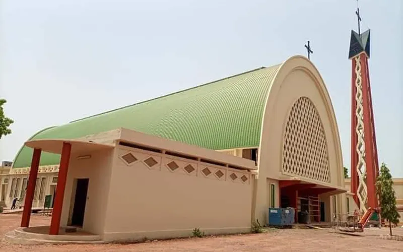

La Cathedrale de Bobo Dioulasso est l’un des monuments religieux les plus importants de la ville. Elle represente un symbole fort de la presence chretienne dans la region et constitue un lieu de culte, de rassemblement et de recueillement pour de nombreux fideles. Une architecture remarquable Construite au debut du XXeme siecle, la cathedrale se distingue par son architecture mixte, alliant des elements traditionnels europeens et des touches locales. Ses grandes tours, ses vitraux colorés et son interieur spacieux en font un batiment impressionnant et paisible. Parmi ses caracteristiques principales, on trouve : une facade imposeante avec des sculptures religieuses des vitraux illustrant des scenes bibliques une grande nef pouvant accueillir plusieurs centaines de personnes un orgue ancien Un lieu de vie spirituelle et communautaire La cathedrale ne se limite pas a un role religieux. Elle est aussi un centre dynamique pour la communaute locale, accueillant des messes quotidiennes, des celebrations de grandes fetes chretiennes, mais egalement des activites caritatives et culturelles. Des groupes de chant, des rencontres de jeunes et des evenements d’entraide y sont frequemment organises, renforcant ainsi le tissu social autour de ce lieu sacre. Un attrait touristique Pour les visiteurs et les touristes, la cathedrale est un passage incontournable. Elle offre : une experience spirituelle intense une decouverte architecturale un lieu calme au coeur de la ville De nombreuses visites guidees sont proposees pour mieux comprendre son histoire et son role dans la vie de Bobo Dioulasso. Conclusion La Cathedrale de Bobo Dioulasso est bien plus qu’un batiment religieux. Elle est un symbole de foi, de paix et de rassemblement pour la population. Sa richesse architecturale et son ambiance paisible font d’elle un lieu privilegie a visiter lors d’un sejour dans la deuxieme ville du Burkina Faso.
Retour